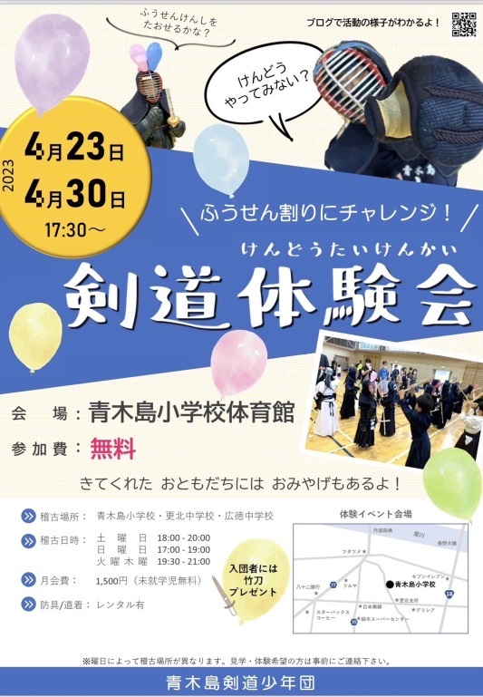

入団案内
新入団員を募集しています。
いつでも見学・体験・入団できます。
一緒に楽しく剣道しませんか？
稽古日時・場所
火曜 19:00-20:30 更北中学校
木曜 19:00-20:30 広徳中学校
土曜 18:00-20:00 青木島小学校
日曜 17:00-19:00 青木島小学校
※時間・場所は、変更になる場合があります。
青木島小学校
更北中学校
広徳中学校
対象
未就学児(年長ぐらい)
小学生
中学生
青年部(高校生、大人)
いずれも初心者大歓迎です。
青年部には、お子さんの保護者(初心者、リバ剣)も参加しています。
会費
未就学児 月額0円 + スポーツ保険料
小学生 月額1500円 + スポーツ保険料
中学生 月額1500円 + スポーツ保険料
青年部 月額0円 + スポーツ保険料
※入会金は不要です。
※月謝は兄弟優遇制度があります。
剣道具など
未就学児・小学生に対して、剣道具(面、胴、垂)、剣道着と袴をレンタルしています。
小手は、各自で用意してください。
未就学児・小学生・中学生の入団時に、竹刀を1本プレゼントします。
剣道具は、個人で購入される場合3～4万円くらいです。
入団～剣道具の流れ(小学生の場合)

見学・体験のときは、動きやすい服装、手ぶらでお越しください。
簡単な剣道の稽古を、団の子どもたちと一緒に体験してください。
見学・稽古は何度来ていただいても大丈夫です。
1度体験しただけではわからないと思いますので、何度でも体験してください！
2023年4月剣道体験会のチラシ
例年、4月に剣道体験会を開催しています。

お問い合わせ
見学・体験をご希望の方は下記までメールをお願いいたします。
mail : aokijimakendosyonendan@gmail.com
ホームへ
団の紹介、活動方針
中学校部活動の地域移行
青年部